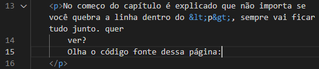

No começo do capítulo é explicado que não importa se você quebra a linha dentro do <p>, sempre vai ficar tudo junto. quer ver? Olha o código fonte dessa página:
Para quebrar o texto em algum lugar, é necessário usar a tag
<br> (break row). Viu?! Quebrou.
Sempre que precisar usar um caractere especial que não existe no teclado, pesquise por HTML Entiries. Você com certeza vai encontrar o código do caractere que precisa.Mas, para facilidar tua vida, CLICA AQUI.
Cada emoji também possui um código, esse código se chama Unicode. Você encontra esses códigos CLICANDO AQUI.